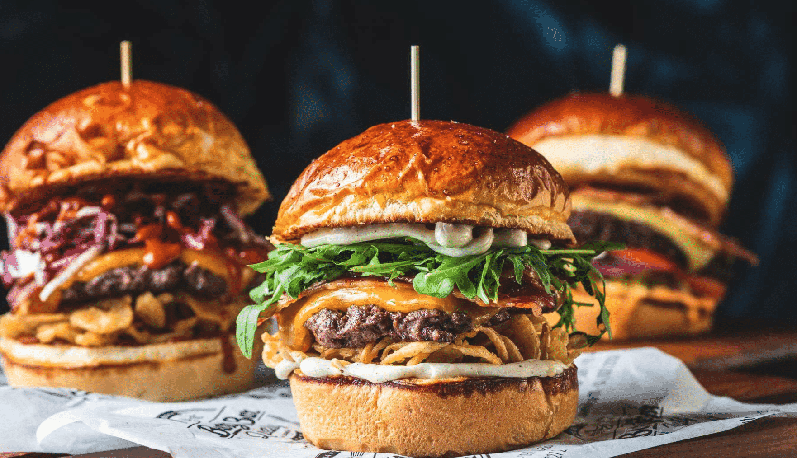

О ресторане
Напоминание
Как я и говорил, наше заведение открылось в 1920 году. Мой отец
(Большой Джо) придумывал различные бургеры, некоторые из них готовят
до сих пор!
Снизу изображены одни из первых бургеров в нашем заведении!
О бургерах
Мы готовим бургеры, потому что вопреки распространенному мнению на этот счет, бургеры – не вредная еда, это сложносочиненный бутерброд, которым можно с пользой насытиться, употребив меньшее количество калорий, чем, например, съев комплексный обед. Бургеры давно перестали быть исключительно едой категории фастфуд, и сейчас их можно обнаружить даже в меню ресторанов высокой кухни.
О качестве
У нас все исключительно свежее, никаких заготовок: все, что сегодня приготовлено, сегодня же обязательно будет употреблено. Наши поставщики – лидеры мирового рынка в своем сегменте. Мы готовим бургеры из мраморной говядины травяного и зернового откорма абердин-ангусской породы, выращенной без гормонов и антибиотиков. Ежедневно мы выпекаем в 2 вида румяных булочек для бургеров. Уникальная авторская рецептура позволяет сделает их по - домашнему ароматными и мягкими. Главное наше ноу-хау в уникальном составе и системе прожарки котлет. Мы изготавливаем бленд из разных отрубов мраморной говядины. Перед прожаркой котлеты должны быть строго от 200 - 1000 граммов по весу и диаметром от 20 - 100 сантиметров.
О фишках
Мы первые, кто ввел такие размеры бургеров. У нас оригинальная подача блюд. При заказе Мега-(800гр) и VIP-(1000гр) бургеров заказ гостю выносит официант, все это сопровождается 5-ю ударами в гонг и выстрелом из хлопушек.
О стереотипах
Мы максимально расширили свою аудиторию. У нас можно встретить сидящих бок о бок простого студента и олигарха. Пообедать в "Заведение Большого Дейва" может позволить себе любой россиянин. Мы рушим стереотип о том, что бургер – вреден. У нас все натуральное, нас предпочитают спортсмены и люди, следящие за своим здоровьем.
Итог
Неважно какой у вас возраст, статус, важно то, какой у вас аппетит!
Побывав на данном сайте, я надеюсь, что вы для себя подчеркнули две важные детали:
- Если вы хотите съесть сочный и вкусный бургер, то обязательно приходите в "Бургерное заведение Большого Дейва"!
- Если у вас сломался мотоцикл(или вы просто хотите поесть), также приходите к нам, мы будем рады!
Чтобы вы успешно доехали(или дошли) до нашего заведения, я прикреплю вам карту! Успехов!